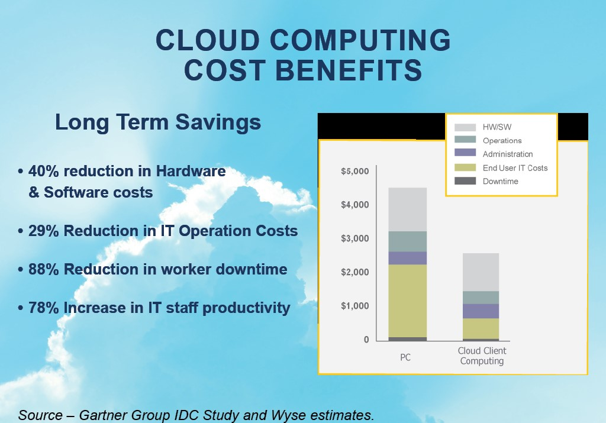
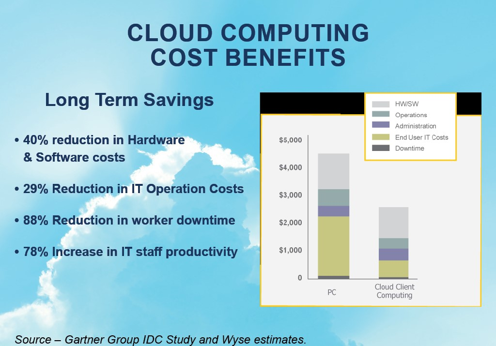

FAQ
To answer some common questions, you may have, simply click on the options below for some helpful information. And if you would like to discuss some of your practices needs or have additional questions, please email us at
info@ivfcloud.com
- Why is doing your practice’s IT the old on-site way so expensive and how is IVF Cloud better?
- What is my Total Cost of Ownership by doing it the old way versus IVFCloud?
- What are the Business Benefits of IVFCloud versus continuing to do it the old way?
- So how much do I have to pay to get on your platform?
- Have you ever had a major service failure or significant downtime on your hosted platform?
- How do you mitigate any major downtime on your platform?
- What if I lose my internet connection, or my office is inaccessible due to storms or other catastrophes?
- What happens if I change to a different EMR?
- Who has access to my data?
- Can you track who has logged in and made changes to anything on the platform?
- Is my email secure on your platform?
- What about encryption?
- Can I do secure texting on your platform?
- What happens if someone accidently deletes a file or document?
- What kind of reports do you provide on your platform performance?
 
